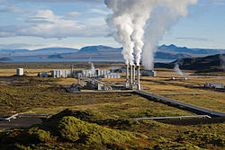

Our future on the earth is uncertain and our planet is in jeopardy. We Face complex problems such as climate change, vast exploitation of natural resources, population growth, scarcity of food and water, rising sea levels, among many others. We must apply
Sustainable Development in order to sustain our planet for future generations.